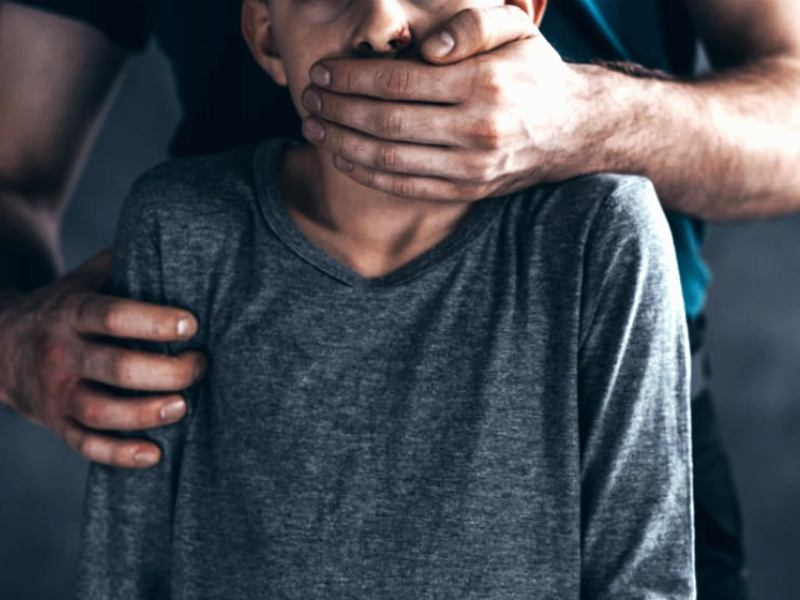

A pedofilia é uma condição psicológica em que uma pessoa tem uma atração sexual persistente ou recorrente por crianças pré-púberes (geralmente com menos de 13 anos). É importante destacar que a pedofilia é considerada uma parafilia, que é uma categoria de distúrbios mentais definidos por fantasias, desejos ou comportamentos sexuais que envolvem crianças, pessoas não consentidas ou situações atípicas.
No entanto, é fundamental separar a pedofilia (como uma atração ou condição psicológica) de atos ilegais de abuso sexual infantil. Enquanto a pedofilia envolve a presença de desejos ou fantasias, o abuso sexual de crianças envolve comportamentos criminosos que causam danos às vítimas. Esse tipo de comportamento é condenado em praticamente todas as sociedades e é punido por lei em praticamente todos os países.
Refere-se à condição ou preferência sexual de uma pessoa que se sente atraída sexualmente por crianças.
Embora a pedofilia seja considerada uma desordem mental, nem todos os pedófilos cometem atos de abuso sexual. Algumas pessoas com essa atração reconhecem que é errada e buscam tratamento psicológico para evitar comportamentos inadequados.
O abuso sexual de crianças envolve comportamentos reais e ilegais que violam o bem-estar físico e psicológico de uma criança. Isso pode incluir toques impróprios, exploração sexual, ou exposição a conteúdos sexuais inadequados.
O abuso sexual infantil é um crime gravíssimo em quase todas as jurisdições, com penas severas. Além disso, tem impactos profundos e duradouros nas vítimas, afetando seu desenvolvimento psicológico, emocional e físico.
Aliciamento Online (Grooming): É um processo em que o pedófilo estabelece contato com a criança pela internet, buscando ganhar sua confiança. Isso é feito através de redes sociais, aplicativos de mensagens ou jogos online. Ao longo do tempo, o aliciador manipula a criança emocionalmente, muitas vezes fingindo ser outra pessoa, para obter fotos, vídeos ou até conseguir encontros físicos.
Compartilhamento de Material Abusivo: Pedófilos usam a internet para acessar e compartilhar imagens e vídeos de abuso sexual infantil, geralmente em fóruns da dark web ou em grupos secretos de redes sociais. Esses materiais são frequentemente chamados de pornografia infantil, embora a expressão correta seja material de abuso sexual infantil, já que envolve a exploração de crianças.
Exploração Sexual ao Vivo (Streaming): Em alguns casos, os pedófilos pagam para assistir ao abuso sexual de crianças transmitido ao vivo pela internet. Esse tipo de exploração frequentemente envolve redes de tráfico infantil e abusadores que operam em áreas vulneráveis do mundo.
Redes de Pedofilia: Existem redes organizadas de pedófilos que compartilham material, estratégias de como aliciar crianças e até apoio mútuo para cometer crimes. Esses grupos costumam usar plataformas da internet que permitem anonimato, como redes da dark web ou aplicativos de mensagens criptografadas.
Perfis Falsos: Pedófilos criam perfis falsos em redes sociais ou jogos online, muitas vezes fingindo ser crianças ou adolescentes, para se aproximar de menores. Usam essas plataformas para estabelecer conversas, trocar fotos ou vídeos e tentar encontros físicos.
Investigações de Crimes Cibernéticos: Autoridades policiais, como o FBI (nos Estados Unidos), a Interpol (em nível internacional), e a Polícia Federal (no Brasil), têm unidades especializadas em crimes cibernéticos, que monitoram, investigam e combatem a pedofilia na internet.
Legislação Específica: Muitos países têm leis severas que punem tanto o aliciamento de menores quanto a produção, distribuição e posse de material de abuso infantil. As penas para esses crimes podem incluir prisão de longo prazo, multas pesadas e registro como criminoso sexual.
Colaboração Internacional: Como a internet é global, o combate à pedofilia online requer colaboração internacional. As agências de segurança trocam informações e trabalham juntas para rastrear redes de pedofilia e desmontar operações de exploração infantil.
Plataformas e Empresas de Tecnologia: Muitas plataformas de redes sociais e serviços de internet têm políticas de tolerância zero com abuso infantil. Elas colaboram com as autoridades para remover conteúdos ilegais e denunciar atividades suspeitas.
A pedofilia na internet é uma ameaça crescente, alimentada pela facilidade de acesso e anonimato que a rede proporciona. Embora o problema seja vasto, o trabalho conjunto entre autoridades, empresas de tecnologia, educadores e pais pode ajudar a proteger as crianças. Prevenir o abuso começa com a educação e a vigilância, e garantir que as crianças saibam os riscos e como se proteger na internet é fundamental para combater essa forma de exploração.